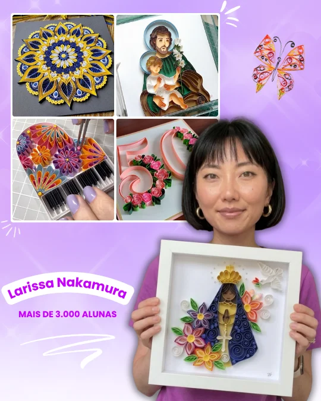
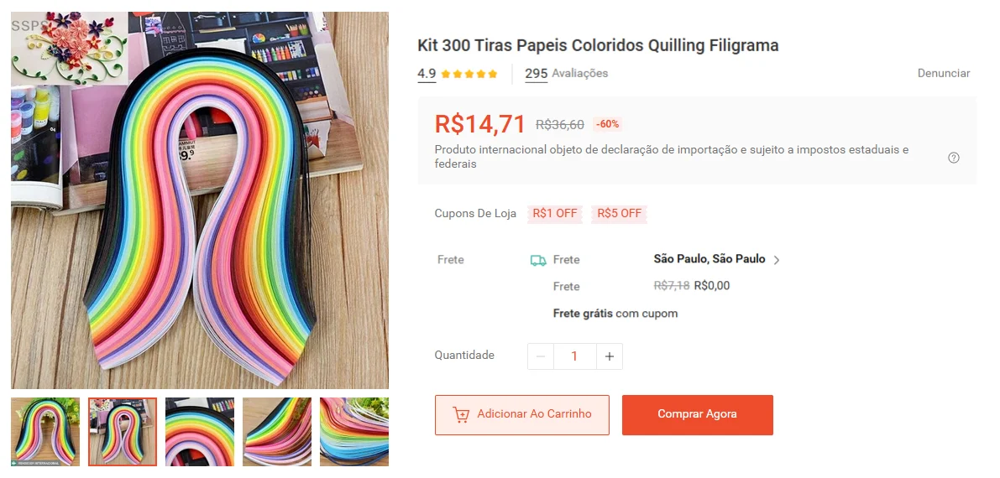
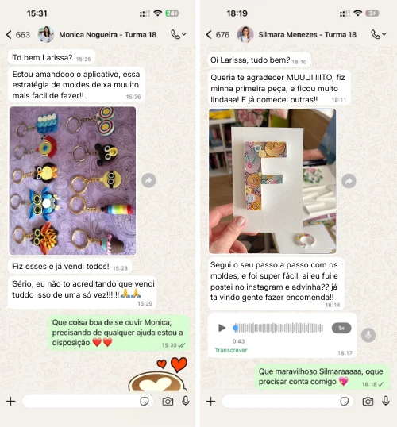

Descubra um jeito simples e acessível de criar peças lindas de Quilling em casa, com um passo a passo pensado para quem está começando do zero.

E o melhor? Eu vou te ensinar o passo a passo, no seu ritmo, usando materiais simples e fáceis de encontrar.
Clica no botão abaixo para ter um plano personalizado pra você!
Juliana Nascimento
Eu sempre quis fazer artesanato, mas queria fazer algo diferente, foi aí que eu conheci o filigrana de papel. Além de ser uma delícia fazer isso, é muito fácil, e ainda por cima, as peças ficam simplesmente LINDAS! Estou amando!!!
Débora Melo
Eu amo artesanato, faço de tudo. Porém o quilling eu tenho uma paixão maior. As peças são únicas, e não são iguais os outros artesanatos que você demora muito tempo pra ver como fica pronto. Eu demoro 1 hora pra fazer qualquer peça de quilling. Eu amo essa velocidade pra ver o resultado final!
Pra começar, me conta uma coisa:
Qual seu nível de experiência com Quilling?
Personalizamos o seu pacote de acordo com suas respostas.
Esse vai ser o seu primeiro treinamento sobre
Quilling?
Personalizamos o seu pacote de acordo com suas respostas.
Quanto tempo você tem disponível para aprender?
Personalizamos o seu pacote de acordo com suas respostas.
O que você mais deseja conquistar com o Quilling?
Personalizamos o seu pacote de acordo com suas respostas.
Depois que você aprender as fazer as peças de Quilling, qual será sua meta?
Personalizamos o seu pacote de acordo com suas respostas.
Qual estilo de Quilling você deseja fazer?
Pode selecionar mais que uma opção
Personalizamos o seu pacote de acordo com suas respostas.
Mas precisa ter experiência com artesanato?

Não
O método que eu ensino com Moldes é simples e rápido. Com apenas algumas tiras de papel em poucas horas você já consegue criar peças lindas apenas modelando e colando o papel no molde, é tão simples que qualquer pessoa consegue fazer, mesmo que nunca tenha feito nada parecido antes.
Todas as peças do treinamento seguem o mesmo processo e seguindo o passo a passo, você vai conseguir fazer suas peças de Quilling com facilidade.
O material é caro?
Nem um pouco! Na Shopee ou em loja de armarinhos, o kit sai por menos de R$ 15,00. E o melhor, com 300 tiras dá pra fazer aproximadamente 30 peças com uma venda média de R$80,00 por peça, isso significa um lucro de até R$2.385,00. Ou seja, é um artesanato com investimento baixíssimo para começar, e com um alto potencial de lucro.

Com certeza é o artesanato mais barato de se fazer, conseguindo produzir grandes quantidades com pouquíssimo investimento!
Olha o que minhas alunas estão dizendo sobre o treinamento
Universo do Quilling!

Você esta a poucos passos de iniciar uma GRANDE mudança!
Carregando um treinamento exclusivo pra você
Parabéns!
Você foi qualificada para participar do treinamento UNIVERSO DO QUILLING
Olha tudo que você terá acesso no Treinamento
Universo do Quilling
✅ Acesso vitalício, assista sempre que quiser
✅ Vídeo aulas, explicando o passo a passo sobre tudo que você precisa aprender no Quilling
✅ Aprenda a fazer Quadros Decorativos e Religiosos, Flores, Cartões e Convites Personalizados, Chaveiros, Acessórios de Moda, lembrancinhas e muito mais!
✅ Como fazer sua primeira venda em 24h
✅ Marketplaces para vender suas peças
✅ Como posicionar e vender nas redes sociais
✅ Como calcular o preço ideal de cada peça para lucrar 100% em cima
✅Como organizar sua produção para conseguir atender mais clientes
✅ Método para faturar até R$3.240,00 por mês com suas peças
✅ Ideias e inspirações lindas para produzir suas peças
Veja algumas das várias peças que você irá começar a fazer:


🎁 Ganhe 4 BÔNUS grátis se garantir sua vaga AGORA:
🎁 BÔNUS 1 – Calculadora de Precificação para você saber quanto cobrar em cada peça e conseguir lucrar 100% em cima.
🎁 BÔNUS 2 – Suporte inteligente 24h para você ter alguém que vai pegar na sua mão e tirar todas as suas dúvidas e te guiar com o que você precisar.
🎁 BÔNUS 3 – Lista de Fornecedores para você saber onde comprar com segurança pagando menos e com a melhor qualidade
🎁 BÔNUS 4 – 50 moldes prontos para você já começar a treinar, focados em te ajudar a aprender as técnicas na prática
PAGAMENTO ÚNICO - SEM MENSALIDADES
Universo do Quilling
de R$147,00 por:
8x R$ 5,63
ou R$37,90 à vista
Por menos de R$1,30 por dia, você tem acesso a um método completo, aplicativo personalizado de acordo com as suas respostas e suporte para começar a sua renda com Quilling


Corra! Falta apenas 8 vagas disponíveis
Larissa Nakamura –
Criadora do Treinamento Universo do
Quilling, especialista em peças de Quilling que encantam e vendem desde 2018.
Criadora do treinamento Universo do Quilling e apaixonada por artesanato desde 2017.
Minha história começou de forma simples: vi minha mãe fazendo crochê, achei legal, mas muito difícil. Foi aí que conheci a técnica Quilling, que é muito mais fácil e cria peças lindas, me encantei e comecei a fazer decorações, quadros, lembrancinhas, cartões e convites personalizados. ✨
Me especializei em acabamento, combinações de cores e estratégias de vendas, e hoje vivo daquilo que amo: criar peças artesanais lindas, sofisticadas e duráveis.
Hoje ensino mais de 3 mil alunas a terem sua independência financeira com Quilling. Quero te mostrar que você também pode transformar sua paixão pelo artesanato em uma fonte de renda lucrativa!
Veja o que as alunas da turma 1 estão falando do treinamento:
Ivanilde Fonseca
Nunca tinha feito Quilling antes e achei que era muito difícil. Seguindo o passo a passo do aplicativo, fiz minha primeira peça no terceiro dia. Não sei se é porque o aplicativo é personalizado ou porque a Larissa mostra cada detalhe nos vídeos
Lucimara Mendes
Consegui vender a minha primeira peça em 9 dias, to encantada!!! Já fiz 2 quadros, o primeiro ficou pra mim e o segundo eu vendi. E foi muito fácil de vender, é como a Larissa disse, é só fazer a primeira peça, ai eu postei ela no instagram e choveu de gente querendo comprar, surreal de bom!
Dúvidas Frequentes
Sim. Ao adquirir o Universo do Quilling, o acesso é vitalício, sem mensalidades e sem cobranças futuras. Você pode assistir às aulas quando quiser, no seu tempo e para sempre!
Todo o passo a passo você irá aprender em videoaulas, do início ao fim. Tudo para que qualquer pessoa consiga fazer, mesmo quem nunca fez quilling antes!
O acesso é liberado imediatamente após a compra. Você receberá pelo e-mail utilizado na compra.
Não esqueça de verificar a Caixa de Spam e o Lixo Eletrônico.
Não. O método foi criado para iniciantes absolutos. Você aprende desde os Moldes, seguindo um passo a passo simples em videoaulas, mesmo que nunca tenha feito Quilling antes, basta fazer a exatamente o que é passado nos vídeos.
Ele é personalizado de acordo com o seu tempo disponível. Com 20 a 30 minutos por dia já é possível acompanhar as aulas e começar a produzir suas peças de Quilling. Você faz no seu ritmo, sem pressão.
Sim. Você tem 7 dias de garantia, conforme o Código de Defesa do Consumidor. Se não gostar, é só solicitar o reembolso dentro do prazo que seu dinheiro será 100% reembolsado sem burocracia.